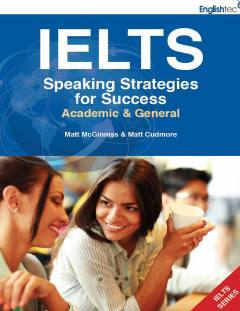

ISIELTS imtihonining og'zaki nutq qismidan yuqori ball olish uchun amaliy strategiyalar.
Ushbu kitob IELTS imtihonining og'zaki nutq (Speaking) qismidan yuqori ball olish uchun samarali strategiyalar va maslahatlarni taqdim etadi. Mualliflar Matt McGinniss va Matt Cudmore test tuzilishi, baholash mezonlari hamda so'z boyligini oshirish bo'yicha amaliy tavsiyalarni yoritib bergan. Akademik va umumiy imtihon topshiruvchilar uchun mo'ljallangan.